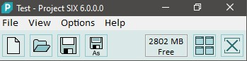
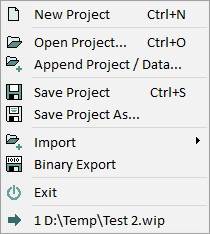
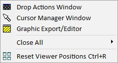
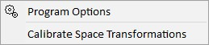
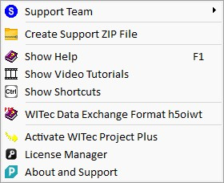

|
主窗口
|

Test - Project FIVE
应用程序标题显示当前文件名和应用程序名称。
如果项目已修改且未保存，文件名左侧显示星号"*"字符。
工具按钮
---
内存信息
用鼠标悬停在内存信息上会显示以下内存信息：
PM = 物理内存中可用空间量
PF = 页面文件中可用空间量
AS：地址空间可用空间量（百分比）
Free：地址空间可用空间量（MB）
如果文本变红，您应该考虑保存文件并创建新项目。
文件菜单

新建项目
创建一个新的空项目。
打开项目
从文件打开现有项目。请参阅加载或追加项目。
追加项目/数据
将选定项目文件中的所有数据追加到当前项目。请参阅加载或追加项目。
保存项目
保存当前项目并覆盖现有文件。请参阅保存项目。
项目另存为
保存当前项目并提示用户输入文件名。请参阅保存项目。
导入（子菜单）
请参阅导入概述。
视图菜单

拖放操作窗口
显示或隐藏拖放操作窗口。
光标管理器窗口
显示或隐藏光标管理器窗口。在此可以查看所有不同的光标位置，例如空间、光谱、CCD 计数等。
图形导出/编辑器
打开图形导出窗口，可用于将位图导出为所需的图像文件格式。
关闭全部（子菜单）
在此可以一键关闭某种类型的所有窗口。例如关闭所有图像查看器。
重置查看器位置
这将重新对齐所有查看器窗口。
点查看器窗口
仅在 WITec Control 中可见。
显示栅格样品测量的点查看器。
选项菜单

程序选项
显示程序选项窗口。
校准空间变换
用于特殊系统：允许您为非校准扫描台测量定义空间变换。
帮助菜单

支持团队（子菜单）
包含一些仅供 WITec 员工使用的特殊功能。
要将日志文件和更多信息发送给 WITec，可以使用子菜单项"创建支持 ZIP 文件"。
---
创建支持 ZIP 文件
收集有关您系统的信息并将其保存到压缩的 ZIP 文件中。
用于 WITec 支持团队帮助修复软件问题。
---
显示帮助
显示此帮助手册。您可以在软件中任何地方按 F1 打开上下文帮助：
将显示具有焦点的窗口的帮助。
在视频窗口中：将显示鼠标指针下方组件的帮助。
显示视频教程
打开WITec 视频教程的网页。
显示快捷键
显示快捷键查看器
WITec 数据交换格式 h5oiwt
打开 h5oiwt 文件格式的帮助 PDF。
---
激活 WITec Project Plus
显示WITec Project Plus 激活许可信息。
许可证管理器
显示许可证管理器。在此您可以添加新的或移除过期的许可证。
关于与支持
显示关于对话框。这将显示以下信息：